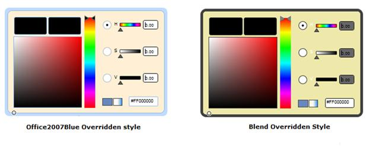

Switching between the overridden styles should be done manually. The overridden styles should be merged into the ResourceDictionary.
The following steps explain how to switch between overridden styles.
6. Add the corresponding resource dictionaries in the sample.
|
[XAML] <ResourceDictionary> <ResourceDictionary.MergedDictionaries> <ResourceDictionary Source="/Syncfusion.Theming.Blend;component/BrushEdit.xaml"></ResourceDictionary> <ResourceDictionary Source="/Syncfusion.Theming.Office2007Blue;component/BrushEdit.xaml"></ResourceDictionary> </ResourceDictionary.MergedDictionaries> </ResourceDictionary>
|
7. Define the new styles using the BasedOn property.
The following code snippet overrides the Syncfusion style for the Calendar control.
|
[XAML]
<Grid x:Name="grid" Background="White"> <Grid.Resources> <Style x:Key="BlendStyle" TargetType="syncfusion1:BrushEdit" BasedOn="{StaticResource BlendBrushEditStyle}"> <Setter Property="Background" Value="PaleGoldenrod"/> </Style> <Style x:Key="Office2007BlueStyle" TargetType="syncfusion1:BrushEdit" BasedOn="{StaticResource Office2007BlueBrushEditStyle}"> <Setter Property="Background" Value="PapayaWhip"/> </Style> </Grid.Resources> <Grid.ColumnDefinitions> <ColumnDefinition/> <ColumnDefinition/> </Grid.ColumnDefinitions> <ComboBox Name="combo" Width="140" Height="30" SelectionChanged="ComboBox_SelectionChanged" Grid.Column="0"> <ComboBoxItem>Blend</ComboBoxItem> <ComboBoxItem>Office2007Blue</ComboBoxItem> </ComboBox> <syncfusion1:BrushEdit Height="200" HorizontalAlignment="Left" Margin="10,10,0,0" Name="brushEdit" VerticalAlignment="Top" Width="300" Grid.Column="1"/> </Grid> |
On ComboBox SelectionChanged event, particular overridden style should be set to the control depending on the current visual style.
The following code snippet explains how to set the overridden styles for the controls.
|
[C#]
private void ComboBox_SelectionChanged(object sender, SelectionChangedEventArgs e) { if (combo.SelectedIndex == 0) { SkinManager.SetVisualStyle(brushEdit,Blend); System.Windows.Style style = grid.Resources["BlendStyle"] as Style; brushEdit.Style = style; } else if (combo.SelectedIndex == 1) { SkinManager.SetVisualStyle(brushEdit,VisualStyle.Office2007Blue); System.Windows.Style style = grid.Resources["Office2007BlueStyle"] as Style; brushEdit.Style = style; } }
|
The output is as shown below.

Figure 1164: BrushEdit Overridden Styles